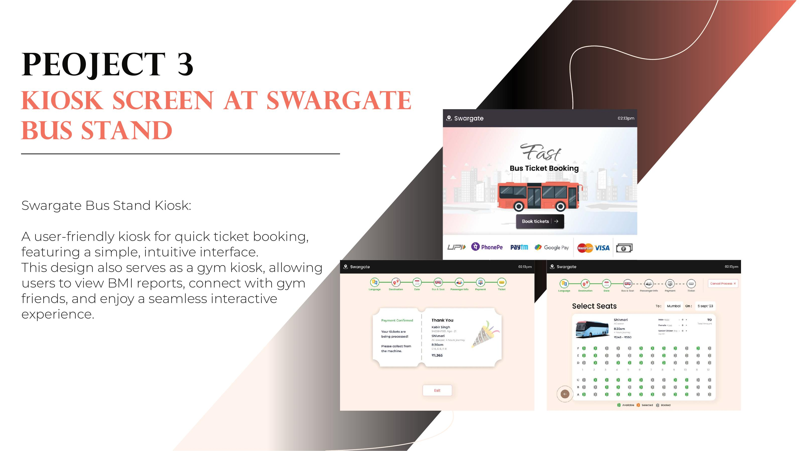
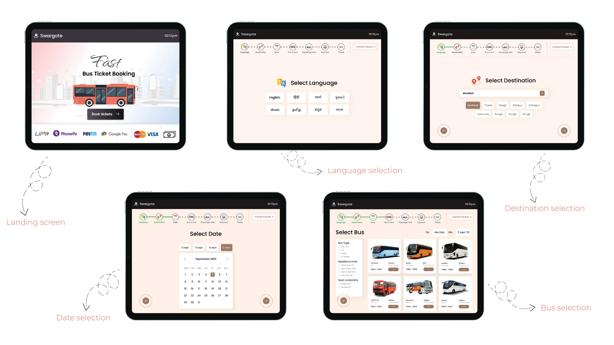
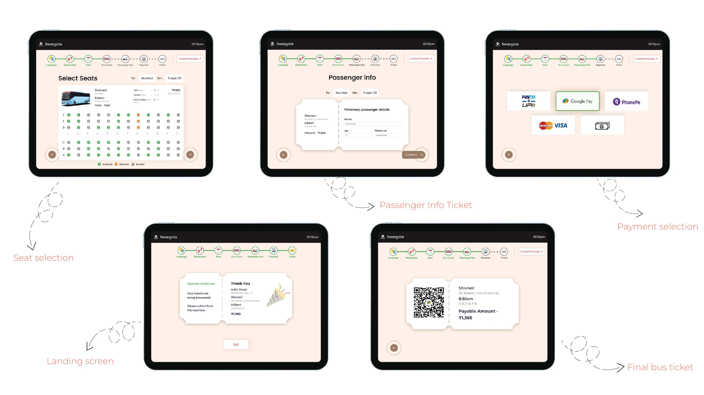

Academic Project / Kiosk UX
Swargate Kiosk
A simple, intuitive bus ticket booking kiosk for Swargate Bus Stand, Pune — guiding users from language selection to printed ticket.

Overview
Fast bus ticket booking
The Swargate Bus Stand Kiosk is a user-friendly kiosk concept for quick ticket booking, featuring a simple, intuitive interface. Designed for a diverse range of travellers at one of Pune's busiest bus terminals, the flow prioritises clarity and speed.
A consistent step-progress indicator at the top of each screen guides users through the full booking journey, with support for eight languages from the very first screen.
Scope
End-to-end booking steps
Booking Flow — Part I
Landing to bus selection
The first half of the flow takes the user from a welcoming landing screen through language and destination selection, date picking on a full calendar view, and bus selection with filtering by bus type, departure time, and seat availability.

Landing ? Language ? Destination ? Date ? Bus selection
Booking Flow — Part II
Seats to confirmation
The second half covers seat selection on an interactive seat map, passenger information entry, payment method selection (UPI, PhonePe, Paytm, Google Pay, card, cash), and a final confirmation screen with QR code and ticket summary.

Seat selection ? Passenger info ? Payment ? Final ticket
Academic project — visuals are from the original portfolio PDF. The problem statement, design rationale, and research methods have not been added beyond what is shown in the screens. Please add your own verified context before publishing.
Next Project
Flo — Gamification